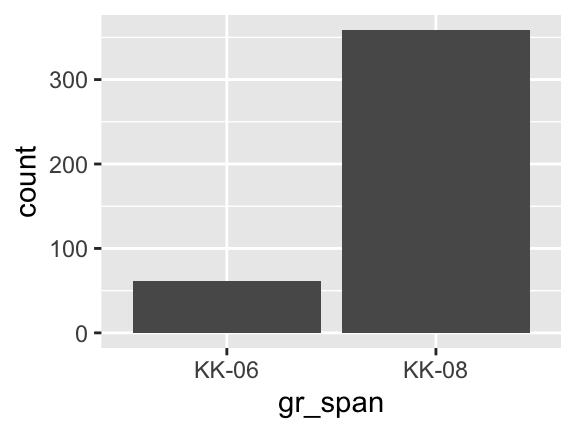
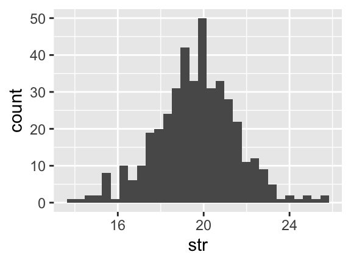
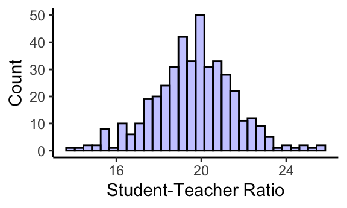
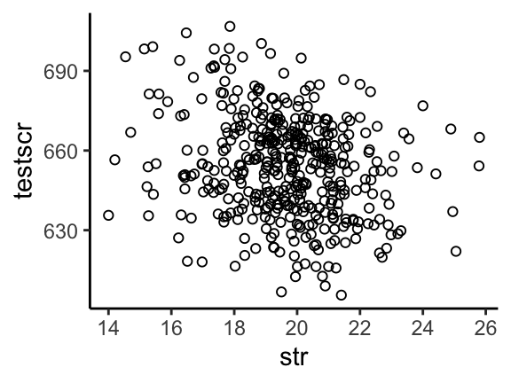

# Load Packages
library(tidyverse)
# Import data
data <- read.csv("caschool.csv")ECON 340
Economics Research Methods
Let’s get started
From Last Class
data <- data %>%
mutate(hcomp = ifelse(comp_stu>=median(comp_stu),1,0))- Syntax:
ifelse(test_expression, x, y) - The returned vector has element from
xif the corresponding value oftest_expressionisTRUEandyif it isFALSE - So here
hcomptakes value 1 whenever computers per student are above the median, and 0 otherwise. What should be the output frommean(data$hcomp)?
Factor Variables
- Variables can be continous (like
testscr) or discrete (likehcompandgr_span) - When the categorical variable is numeric (like
hcomp) sometimes it is useful to store it as a factor variable - This helps prevent R from treating it as a continous variable
Factor Variables
To factorize hcomp
data$hcompf <- factor(data$hcomp,
levels = c(0,1),
labels = c("Low", "High"))Or simply,
data$hcompf2 <- factor(data$hcomp)Graphs using ggplot
ggplot2is an R package included with TidyVerse for data visualization (alternative to base R’s plot())- ggplot2 is designed to work iteratively
- You start with a layer and then add layers (using +s) of annotations and statistical summaries
Histogram: Discrete Variable
ggplot(data=data, aes(x=gr_span)) +
geom_bar()
Histogram: Continous Variable
ggplot(data=data, aes(x=str)) +
geom_histogram()
Making things pretty
ggplot(data=data, aes(x=str)) +
geom_histogram(color="black",fill="blue",alpha=0.25) +
labs(x="Student-Teacher Ratio", y="Count") +
theme_classic()
Scatterplot
ggplot(data, aes(x=str, y=testscr)) +
geom_point(shape=1) +
theme_classic()
Saving output
To save graphs produced by
ggplot(), useggsave()Saves the last graph that was produced in your working directory unless specified otherwise
Let’s try it
::: {.cell layout-align=“center”}
ggsave("myplot.png"):::
Can even specify the height and width of our graphs
::: {.cell layout-align=“center”}
ggsave("myplot.png", width = 4, height = 3):::
Another Useful Package: Stargazer
library(stargazer)
data %>%
select(testscr, str, comp_stu, meal_pct) %>%
stargazer(type = 'text')
==============================================
Statistic N Mean St. Dev. Min Max
----------------------------------------------
testscr 420 654.157 19.053 605.550 706.750
str 420 19.640 1.892 14.000 25.800
comp_stu 420 0.136 0.065 0.000 0.421
meal_pct 420 44.705 27.123 0.000 100.000
----------------------------------------------Real Data is Messier
Missing values are stored as
NAin RIf a value is missing,
mean()and other functions will give an error, so use optionna.rm=TRUElogical
is.na()returnsTRUEif value is missing andFALSEotherwiseSo you can use
filter()as follows to delete missing values on some variablevardata <- data %>% filter(is.na(var) = FALSE)
Real Data is Messier
- Often we need to combine two different datasets
- To merge two data sets on the basis of a common unit, use
merge() - To append data sets, say, across years, can use
rbind() - Problem set 2 will have you deal with some of this
- Next week: Back to theory